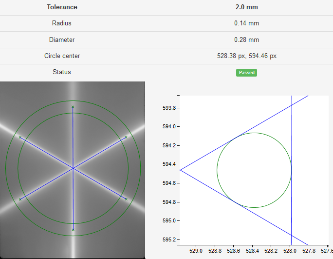

Starshot module¶
How to start¶
Follow Pylinac’s guidelines for image acquisition. The image can be a dicom EPID image imported into Orthanc, or a scanned tif image.
Make sure the star is near the center of the image.
The spokes should be sufficiently long.
Try not to use jaws/diaphragms to shape the field, use only MLC leaves.
If you are using a scanned tiff image, make sure that you use the correct scaling parameters DPI and SID.
Options¶
- Clip box
Sometimes images have unwanted artifacts at the edges. Here you can enter the size of the central portion of the image beyond which pixel values will be set to background signal. If you don’t want to clip the image, put 0.
- Radius
The radius within which Pylinac will analyze the spokes. A value of 0.85 means that the length of the spokes is 85 % of image size. See Pylinac for further explanation.
- Min peak height
See Pylinac for further explanation.
- Start point
The approximate center of the star. Given in pixels. See Pylinac for further explanation.
- SID
Source-imager distance in mm. If the dicom image does not contain this tag, you have to enter it manually. The same goes if the tiff image does not contain this information.
- DPI
Dots-per-inch. If the dicom image does not contain this tag, you have to enter it manually. The same goes if the tiff image does not contain this information.
- Set FWHM?
See Pylinac for further explanation.
- Recursive?
See Pylinac for further explanation.
- Invert image?
Tick this box if you want to invert the image.
- Load external image
Here you can load an external tif image. Only .tif images are supported so far.
Results¶
You can define the tolerance in the administration. The status of the analysis will be Passed if the diameter of the circle is within tolerance.
